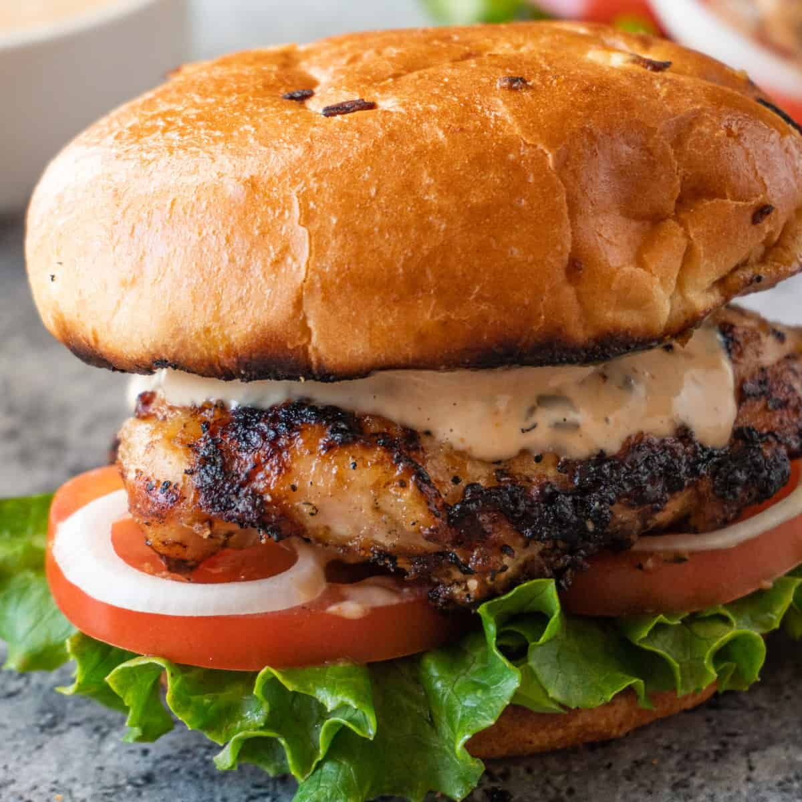

Grilled Chicken Sandwich

Ingredients
- 4 muslos de pollo sin hueso
- 4 panes
- Arúgula
- 100ml de salsa para alitas
- 1/2 barra de mantequilla
- 2 dientes de ajo
- 1/4 cebolla morada
Para el aderezo
- 2 cucharadas de ajo en polvo
- 2 cuacharadas de cebolla en polpo
- 45gr de apio picado
- 150ml de yourg griego
- 150ml de crema
- 150ml de mayonesa
- 1 limon amarillo
- 1 cucharada de albahaca seca
- 1 cucharada de albahaca fresca picada
- 2 cucharadas de pepinillo dulce
Preparacion
- Sazona tu pollo con aceite, sal y pimienta. Ponlo a fuego indirecto durante 10-15 minutos. Despues pasa a fuego directo y sella hasta dorar.
- Para el aderezo solo mezcla todos los ingredientes en un bowl
- Pon un poco de mantequilla a los panes y dóralos un poco
- En un sartén avienta la mantequila y el ajo picado y cocina un poco. Después agrega la salsa para alitas y cocina unos 3 minutos mas
- Barniza la caña de filete y sazonar con sal y pimienta
- Arma tu sandwich. Pan, aderezo, pollo, salsa, arúgula y cebolla morada
Return